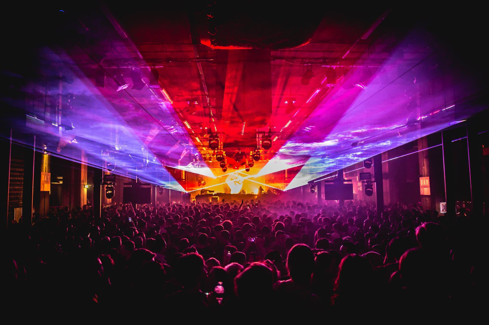

RICKY MORPHIN
Musician - Dj - Electronic Music Producer
NEXT EVENTS

01/06/2020 - Amnesia - Ibiza
01/08/2020 - Tresor - Berlin
01/09/2020 - Djoon - Paris
01/11/2020 - Trädgården - Sweeden
This summer Rotterdam Rave is back at Lloyd Multiplein for their second outdoor festival. On August 19th, the harbor city welcomes heavyweights of the techno music scene such as Jeff Mills, Len Faki, and Speedy J. The festival offers three areas with nothing less than the best quality of techno and house.
Jeff Mills is the main headliner this year. Mills’ large arena DJ sets around the European festival circuit are as good as it gets for big-room techno. The pioneer became a founding member of the Detroit Techno collective; Underground Resistance. Now, label boss of Axis, Mills blurs the boundaries between the dance-floor and the concert hall with his orchestral performances.
Another techno veteran headlining the festival is Rotterdam’s finest Speedy J. The owner of label and event series Electric Deluxe previously hosted his stage at Rotterdam Rave ‘3 Year Anniversary’ and is now back for their outdoor edition.
In addition, SNTS, known for his dark and edgy sound performs his live set alongside hybrid performances of Paula Temple and Perc & Ansome.
Rotterdam Rave Festival 2017 takes place at Lloyd Multiplein: an industrial location in the old docks of Maashaven in Rotterdam. The ticket-sale for the event has already started. Early tickets are going for 29EUR currently, going up to 34EUR once those have all gone. Tickets and more info are here.
Another techno veteran headlining the festival is Rotterdam’s finest Speedy J. The owner of label and event series Electric Deluxe previously hosted his stage at Rotterdam Rave ‘3 Year Anniversary’ and is now back for their outdoor edition.
In addition, SNTS, known for his dark and edgy sound performs his live set alongside hybrid performances of Paula Temple and Perc & Ansome.
Rotterdam Rave Festival 2017 takes place at Lloyd Multiplein: an industrial location in the old docks of Maashaven in Rotterdam. The ticket-sale for the event has already started. Early tickets are going for 29EUR currently, going up to 34EUR once those have all gone. Tickets and more info are here.